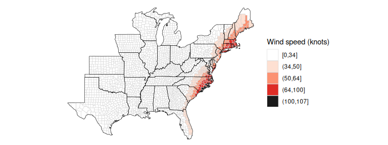

Overview
The stormwindmodel package was created to allow users to
model wind speeds at grid points around the world based on “best tracks”
hurricane tracking data, using a model for wind speed developed by
Willoughby and coauthors (2006). The
package includes functions for interpolating hurricane tracks and for
modeling and mapping wind speeds during the storm. For the US, it
includes population mean center locations for all counties, which can be
used to map winds by county; however, other grid point locations can
also be input for modeling, either to model at other resolutions in the
US or to model in other locations around the world. Full details on how
this model is fit are provided in the “Details” vignette of the
stormwindmodel package.
Package example data
For examples in this vignette, the package includes data on the tracks of Hurricane Floyd in 1999 and Hurricane Katrina in 2005 (other vignettes show examples from outside the US, including in Australia and China). You can load these example best tracks data sets using:
library(stormwindmodel)
data("floyd_tracks")
head(floyd_tracks)## # A tibble: 6 × 4
## date latitude longitude wind
## <chr> <dbl> <dbl> <dbl>
## 1 199909071800 14.6 -45.6 25
## 2 199909080000 15 -46.9 30
## 3 199909080600 15.3 -48.2 35
## 4 199909081200 15.8 -49.6 40
## 5 199909081800 16.3 -51.1 45
## 6 199909090000 16.7 -52.6 45## # A tibble: 6 × 4
## date latitude longitude wind
## <chr> <dbl> <dbl> <dbl>
## 1 200508231800 23.1 -75.1 30
## 2 200508240000 23.4 -75.7 30
## 3 200508240600 23.8 -76.2 30
## 4 200508241200 24.5 -76.5 35
## 5 200508241800 25.4 -76.9 40
## 6 200508250000 26 -77.7 45This example data includes the following columns:
-
date: Date and time of the observation (in the UTC time zone, which is usually used for best tracks data from sources like IBTrACS) -
latitude,longitude: Location of the storm at that time -
wind: Maximum sustained wind speed at that time (in knots over a one-minute period at 10 meters above the surface; in IBTrACS data, wind measured with this averaging period is available in the column titled “USA_WIND”)
You can input other storm tracks into the wind modeling functions in
the stormwindmodel package, but you must have your storm
tracks in the same format as these example dataframes and with these
columns names. If necessary, use rename from
dplyr to rename columns and convert_wind_speed
from weathermetrics to convert windspeed into knots. You
should also ensure that you understand the time zone used for recording
the data, and that the maximum sustained wind is recorded in knots, at
10 meters, based on a one-minute averaging period. If your wind speed
data are based on a different averaging period, you may want to consider
using data from IBTrACS as an alternative, since this database includes
a column with winds converted to this averaging period.
The stormwindmodel package also includes a dataset with
the location of the population mean center of each county in the eastern
United States (county_points). This dataset can be used as
the grid point inputs if you want to model storm-related winds for
counties in the United States. These counties are listed by Federal
Information Processing Standard (FIPS) number, which uniquely identifies
each U.S. county. This dataset comes from the US Census file
of county population mean center locations, as of the 2010 Census.
This dataset also includes a column named glandsea, which
gives a TRUE/FALSE value depending on whether that location is on land
(TRUE) or over water (FALSE), which is
required in the wind modeling process. In this case, since the points
represent US counties, all values are set to TRUE.
## gridid glat glon glandsea
## 1 01001 32.50039 -86.49416 TRUE
## 2 01003 30.54892 -87.76238 TRUE
## 3 01005 31.84404 -85.31004 TRUE
## 4 01007 33.03092 -87.12766 TRUE
## 5 01009 33.95524 -86.59149 TRUE
## 6 01011 32.11633 -85.70119 TRUEYou can use a different dataset of grid points to model winds at
other U.S. locations, or at other locations in the world, including at
evenly-spaced grid points. However, you will need to include these grid
points in a dataframe with a similar format to the example
county_points dataframe, with columns for each grid point
id (gridid— these IDs can be random but should be unique
across grid points), and glat and glon for
latitude and longitude of each grid point. You also need to include a
column named glandsea, which specifies whether that grid
point is over land or water. If you are only modeling locations over
land (for example, a human impacts study would often only measure
exposure at locations where people live, and so may only model points
over land), then you can set all values in this column to be
TRUE. If you are modeling grid points, or a combination of
points over land and over water, then you can use a landmask function
that is included with the package to determine if each point is over
land or water, based on its latitude and longitude. This alternative is
covered in detail in a separate vignette.
Basic example
The main function of this package is get_grid_winds. It
inputs storm tracks for a tropical cyclone (hurr_track) and
a dataframe with grid point locations (grid_df). It models
winds during the tropical storm at each grid point and outputs summaries
of wind during the storm at each grid point from the storm. The wind
measurements generated for each grid point are:
-
vmax_sust: Maximum 10-m 1-minute sustained wind experienced at the grid point during the storm -
vmax_gust: Maximum 10-m 1-minute gust wind experienced at the grid point during the storm -
sust_dur: Duration sustained wind was at or above a specified speed (default is 20 m/s), in minutes -
gust_dur: Duration gust wind was at or above a specified speed (default is 20 m/s), in minutes
For example, to get modeled winds for Hurricane Floyd at U.S. county centers, you can run:
##
## Attaching package: 'dplyr'## The following objects are masked from 'package:stats':
##
## filter, lag## The following objects are masked from 'package:base':
##
## intersect, setdiff, setequal, union
floyd_winds <- get_grid_winds(hurr_track = floyd_tracks, grid_df = county_points)
floyd_winds %>%
select(gridid, vmax_gust, vmax_sust, gust_dur, sust_dur) %>%
head()## # A tibble: 6 × 5
## gridid vmax_gust vmax_sust gust_dur sust_dur
## <chr> <dbl> <dbl> <dbl> <dbl>
## 1 01001 2.98 2.00 0 0
## 2 01003 1.97 1.32 0 0
## 3 01005 4.82 3.23 0 0
## 4 01007 2.32 1.56 0 0
## 5 01009 2.61 1.75 0 0
## 6 01011 4.09 2.74 0 0If you use the county_points data for the
grid_df argument, you will model winds for eastern U.S.
county centers. In this case, the gridid is the county
FIPS. If you model winds at U.S. county centers, you can map the results
using the map_wind function. By default, this function maps
the maximum sustained wind in each county during the storm in meters per
second:
map_wind(floyd_winds)
Further functionality
Modeling winds at other grid points
You can input the track for any Atlantic Basin tropical storm into
get_grid_winds, as long as you convert it to meet the
following format requirements:
- Is a dataframe of class
tbl_df(you can use thetbl_dffunction fromdplyrto do this) - Has the following columns:
-
date: A character vector with date and time (in UTC), expressed as YYYYMMDDHHMM. -
latitude: A numeric vector with latitude in decimal degrees. -
longitude: A numeric vector with longitude in decimal degrees. -
wind: A numeric vector with maximum storm wind speed in knots, representing maximum 10-m 1-minute sustained wind
-
For the grid point locations at which to model, you can input a
dataframe with grid points anywhere in the world. For example, you may
want to map wind speeds for Hurricane Katrina by census tract in Orleans
Parish, LA. The following code shows how a user could do that with the
stormwindmodel package. Other vignettes with this package
give examples of how to do this in places other than the United
States.
First, the tigris package can be used to pull US Census
tract shapefiles for a county. You can use the following code to pull
these census tract file shapefiles for Orleans Parish in Louisiana:
library(tigris)
new_orleans <- tracts(state = "LA", county = "Orleans") %>%
mutate(glandsea = ALAND > AWATER)This data includes columns with the area of land and area of water in
each census tract, so we can use that to create a glandsea
column, using the rubric that the tract is overland if its land area is
greater than its water area and over water if not.
This shapefile gives the polygon for each census tract. You can use
the st_centroid function from the sf package
to determine the location of the center of each census tract:
library(sf)
new_orleans_tract_centers <- st_centroid(new_orleans)
head(new_orleans_tract_centers)## Simple feature collection with 6 features and 14 fields
## Geometry type: POINT
## Dimension: XY
## Bounding box: xmin: -90.01988 ymin: 29.89858 xmax: -89.78792 ymax: 30.10123
## Geodetic CRS: NAD83
## STATEFP COUNTYFP TRACTCE GEOID GEOIDFQ NAME
## 47 22 071 001758 22071001758 1400000US22071001758 17.58
## 243 22 071 000617 22071000617 1400000US22071000617 6.17
## 331 22 071 001748 22071001748 1400000US22071001748 17.48
## 333 22 071 001747 22071001747 1400000US22071001747 17.47
## 334 22 071 001750 22071001750 1400000US22071001750 17.50
## 601 22 071 000800 22071000800 1400000US22071000800 8
## NAMELSAD MTFCC FUNCSTAT ALAND AWATER INTPTLAT
## 47 Census Tract 17.58 G5020 S 169948955 95735784 +30.0986674
## 243 Census Tract 6.17 G5020 S 1201874 277641 +29.9012380
## 331 Census Tract 17.48 G5020 S 2067053 0 +30.0254915
## 333 Census Tract 17.47 G5020 S 7119930 344001 +30.0414373
## 334 Census Tract 17.50 G5020 S 1437944 166340 +30.0384832
## 601 Census Tract 8 G5020 S 614812 0 +29.9596374
## INTPTLON geometry glandsea
## 47 -089.7948284 POINT (-89.78792 30.10123) TRUE
## 243 -089.9940860 POINT (-89.99299 29.89858) TRUE
## 331 -089.9554344 POINT (-89.95543 30.02549) TRUE
## 333 -089.9549478 POINT (-89.95391 30.04018) TRUE
## 334 -089.9176831 POINT (-89.91693 30.03769) TRUE
## 601 -090.0198758 POINT (-90.01988 29.95964) TRUEWith some cleaning, you can get this data to the format required for
the get_grid_winds function. In particular, you should add
the geo id from the original shapefiles as the grid id, as this will
help you map the modeled wind results. You can also extract the latitude
and longitude from the geometry of the sf object and put
them in separate columns, as needed for the wind modeling code:
new_orleans_tract_centers2 <- new_orleans_tract_centers %>%
mutate(glon = unlist(purrr::map(.$geometry, 1)),
glat = unlist(purrr::map(.$geometry, 2))) %>%
rename(gridid = GEOID) %>%
st_drop_geometry() %>%
select(gridid, glat, glon, glandsea)
head(new_orleans_tract_centers2)## gridid glat glon glandsea
## 47 22071001758 30.10123 -89.78792 TRUE
## 243 22071000617 29.89858 -89.99299 TRUE
## 331 22071001748 30.02549 -89.95543 TRUE
## 333 22071001747 30.04018 -89.95391 TRUE
## 334 22071001750 30.03769 -89.91693 TRUE
## 601 22071000800 29.95964 -90.01988 TRUEHere is a map of the census tracts, with the center point of each shown with a red dot:
library(ggplot2)
ggplot() +
geom_sf(data = new_orleans, aes(fill = glandsea)) +
geom_sf(data = new_orleans_tract_centers, color = "red", size = 0.6) +
scale_fill_manual(values = c("dodgerblue3", "bisque3"))
Since the new_orleans_tract_centers2 is now in the
appropriate format to use with the stormwindmodel
functions, you can input it directly into get_grid_winds to
model the winds from Hurricane Katrina at each census tract center:
new_orleans_tracts_katrina <- get_grid_winds(hurr_track = katrina_tracks,
grid_df = new_orleans_tract_centers2)
head(new_orleans_tracts_katrina)## # A tibble: 6 × 6
## gridid date_time_max_wind vmax_sust vmax_gust sust_dur gust_dur
## <chr> <dttm> <dbl> <dbl> <dbl> <dbl>
## 1 22071001758 NA 44.4 66.1 630 1110
## 2 22071000617 NA 41.0 61.0 705 1125
## 3 22071001748 NA 40.2 59.9 690 1110
## 4 22071001747 NA 39.9 59.5 690 1110
## 5 22071001750 NA 41.3 61.5 690 1110
## 6 22071000800 NA 39.2 58.5 705 1110To plot these modeled winds, you can merge this modeled data back into the “sf” version of the census tract shapefile data, joining by geo identification, and then add to the map. You can show wind speed in this map with color.
library(viridis)
ggplot() +
geom_sf(data = new_orleans, aes(fill = vmax_sust)) +
scale_fill_viridis(name = "Maximum\nsustained\nwinds (m/s)")
Creating time series of winds
So far, we’ve focused on functions that allow you to get an overall summary of how high winds were over the course of a storm at a certain location. There are also functions in the package that allow you to extract more complex versions of the wind data, where there is an estimate for the winds at each location at each time point along the storm’s interpolated track (by default, every 15 minutes). This can allow you to create time series of how winds evolved over the course of the storm at each location you are modeling.
For example, you can use calc_grid_winds to calculate
the full time series of winds during Hurricane Floyd at the US county
centers in the eastern US:
data("floyd_tracks")
data("county_points")
floyd_timeseries_winds <- calc_grid_winds(hurr_track = floyd_tracks,
grid_df = county_points)
str(floyd_timeseries_winds)## List of 3
## $ vmax_sust : num [1:1129, 1:2396] 0 0 0 0 0 0 0 0 0 0 ...
## ..- attr(*, "dimnames")=List of 2
## .. ..$ : chr [1:1129] "1999-09-07 18:00:00" "1999-09-07 18:15:00" "1999-09-07 18:30:00" "1999-09-07 18:45:00" ...
## .. ..$ : chr [1:2396] "01001" "01003" "01005" "01007" ...
## $ distance_from_storm : num [1:1129, 1:2396] 4582 4575 4569 4563 4557 ...
## ..- attr(*, "dimnames")=List of 2
## .. ..$ : chr [1:1129] "1999-09-07 18:00:00" "1999-09-07 18:15:00" "1999-09-07 18:30:00" "1999-09-07 18:45:00" ...
## .. ..$ : chr [1:2396] "01001" "01003" "01005" "01007" ...
## $ surface_wind_direction: num [1:1129, 1:2396] NA NA NA NA NA NA NA NA NA NA ...
## ..- attr(*, "dimnames")=List of 2
## .. ..$ : chr [1:1129] "1999-09-07 18:00:00" "1999-09-07 18:15:00" "1999-09-07 18:30:00" "1999-09-07 18:45:00" ...
## .. ..$ : chr [1:2396] "01001" "01003" "01005" "01007" ...This creates an array of three matrices, each with the same
dimensions. There is one matrix each for maximum sustained winds at that
time point in that location (vmax_sust), distance between
the grid point and the storm’s center at that time
(distance_from_storm), and the surface wind direction (if
the storm was within a certain distance of the storm, otherwise this
value will be set as missing) (surface_wind_direction). For
each of these matrices, the rownames give the date and time of the
estimate and the column names give the grid ID (in this case, the county
FIPS code). Here’s an example of a subset of the wind matrix for some
counties in North Carolina around the time of highest winds in the
state:
floyd_timeseries_winds[["vmax_sust"]][830:840, 1400:1410]## 37021 37023 37025 37027 37029 37031
## 1999-09-16 09:15:00 5.721721 7.656765 11.278906 7.828813 15.66919 33.99837
## 1999-09-16 09:30:00 5.677085 7.608157 11.178747 7.791503 16.19404 35.37429
## 1999-09-16 09:45:00 5.627172 7.551176 11.064167 7.745253 16.72975 36.38580
## 1999-09-16 10:00:00 5.572254 7.486155 10.935876 7.690341 17.27607 36.81890
## 1999-09-16 10:15:00 5.512812 7.413697 10.794986 7.627322 17.83243 36.58173
## 1999-09-16 10:30:00 5.448878 7.333884 10.641940 7.556236 18.39941 35.78599
## 1999-09-16 10:45:00 5.380940 7.247366 10.477972 7.477700 18.97723 34.61118
## 1999-09-16 11:00:00 5.309160 7.154417 10.303830 7.391960 19.56759 33.23651
## 1999-09-16 11:15:00 5.233966 7.055642 10.120717 7.299606 20.17298 31.79015
## 1999-09-16 11:30:00 5.155697 6.951551 9.929707 7.201140 20.79812 30.34873
## 1999-09-16 11:45:00 5.074517 6.842460 9.731617 7.096869 21.45172 28.95170
## 37033 37035 37037 37039 37041
## 1999-09-16 09:15:00 12.71196 8.765115 15.93226 3.551014 18.12575
## 1999-09-16 09:30:00 12.82888 8.709713 15.96710 3.516742 18.68154
## 1999-09-16 09:45:00 12.92891 8.644067 15.97514 3.479997 19.24211
## 1999-09-16 10:00:00 13.01129 8.568563 15.95551 3.440952 19.80637
## 1999-09-16 10:15:00 13.07562 8.483898 15.90790 3.399939 20.37308
## 1999-09-16 10:30:00 13.12089 8.390207 15.83121 3.356923 20.94272
## 1999-09-16 10:45:00 13.14683 8.288257 15.72561 3.312218 21.51651
## 1999-09-16 11:00:00 13.15276 8.178414 15.59088 3.265877 22.04891
## 1999-09-16 11:15:00 13.13849 8.061413 15.42785 3.218149 22.57024
## 1999-09-16 11:30:00 13.10382 7.937893 15.23753 3.169215 23.12579
## 1999-09-16 11:45:00 13.04836 7.808279 15.02100 3.119113 23.75651You can extract from this dataset by timepoint, if you want to see a snapshot of modeled winds at a specific time, or extract by grid point, if you want to see how winds changed over the course of the storm at that time point. For example, here is the code to extract and show modeled wind at the population mean center of Dare County, NC (FIPS: 37055) throughout Hurricane Floyd:
library(tibble)
library(lubridate)
dare_winds <- floyd_timeseries_winds[["vmax_sust"]][ , "37055"] %>%
enframe(name = "date", value = "windspeed") %>%
mutate(date = ymd_hms(date))
ggplot(dare_winds, aes(x = date, y = windspeed)) +
geom_line() +
xlab("Observation time (UTC)") +
ylab("Modeled surface wind (m / s)") 
Options for mapping county-level winds
There are a number of options when mapping wind speeds using
map_wind.
First, you can use the add_storm_track function to add
the storm track to the map. This function inputs one dataframe with
tracking data (the floyd_tracks example data that comes
with the package in this case) as well as the plot object created using
map_wind, which is input using the plot_object
argument. In this example code, we’ve first created the base map of
modeled winds in each county using map_wind. We then input
that, along with Floyd’s track data, into add_storm_track
to create a map with both winds and the storm tracks:
floyd_map <- map_wind(floyd_winds)
add_storm_track(floyd_tracks, plot_object = floyd_map)You can choose whether to map sustained or gust winds
(value, which can take “vmax_gust” or “vmax_sust”), as well
as the unit to use for wind speed (wind_metric, which can
take values of “m/s” for meters per second [the default] or “knots”).
For example, you can modeled gust wind speeds in knots during Hurricane
Floyd using:
map_wind(floyd_winds, value = "vmax_gust", wind_metric = "knots")
Finally, you can map a binary classification of counties with winds at or above a certain break point. For example, to map counties with sustained wind at or above 34 knots during Hurricane Floyd, you can run:
map_wind(floyd_winds, value = "vmax_sust", wind_metric = "knots", break_point = 34)Tracks data
You can get an R version of the hurricane best tracks data for
Atlantic basin storms from 1988 to 2018 through the
hurricaneexposuredata package (in development on GitHub).
For more information, see the GitHub
repository for that package. You can also get best tracks data for
tropical cyclones worldwide from IBTrACS.